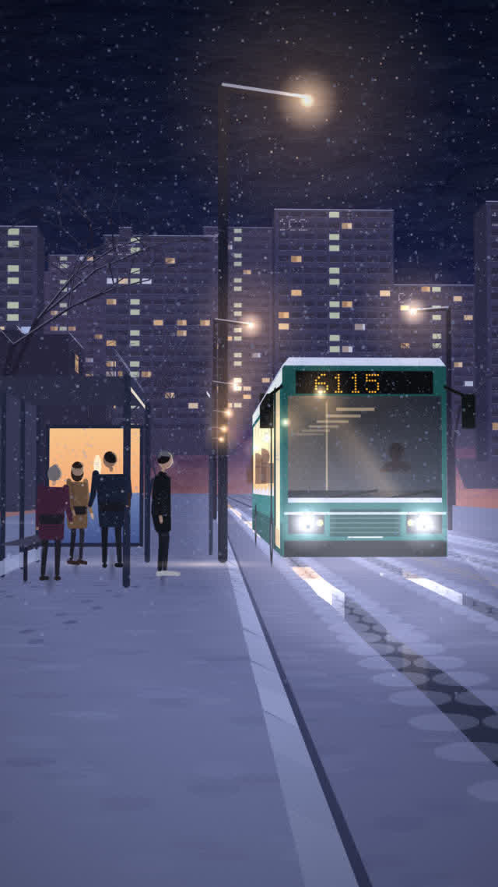
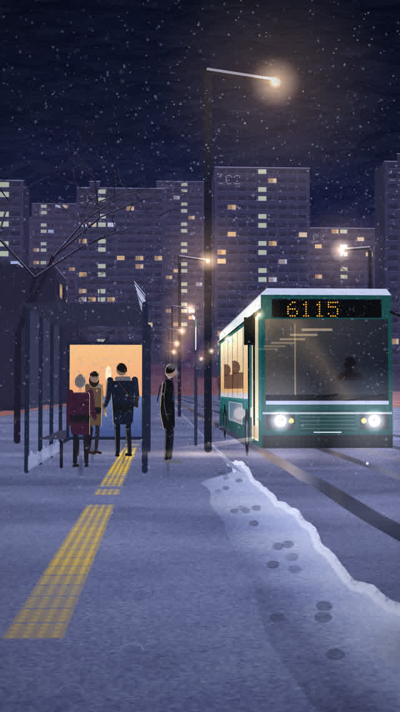
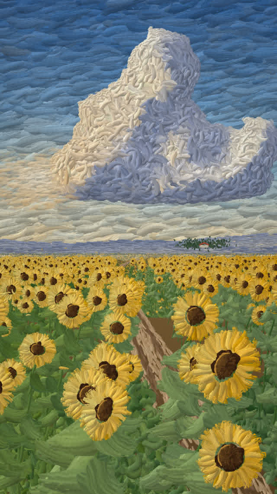
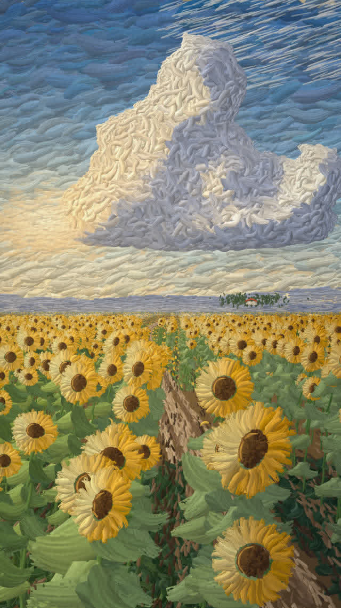
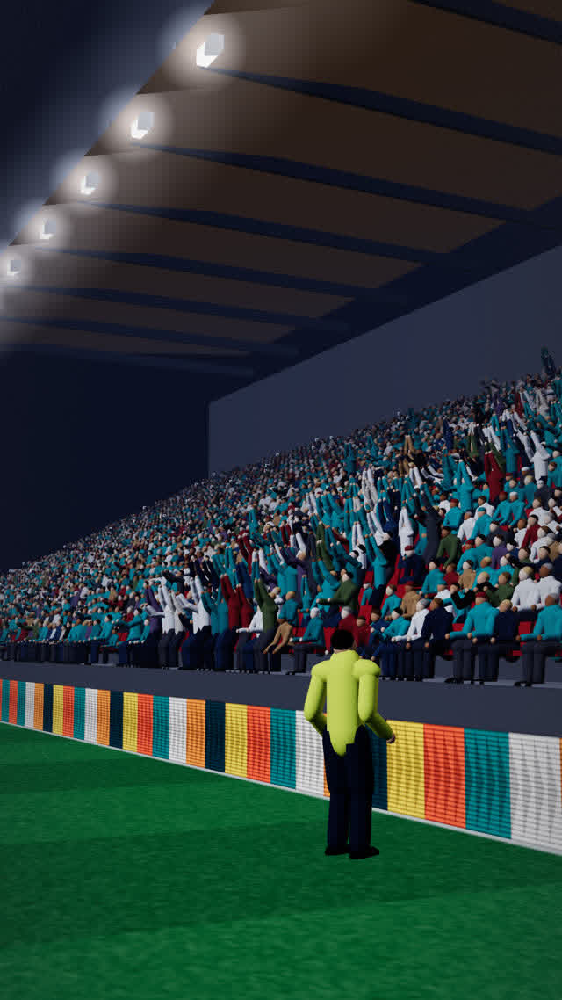
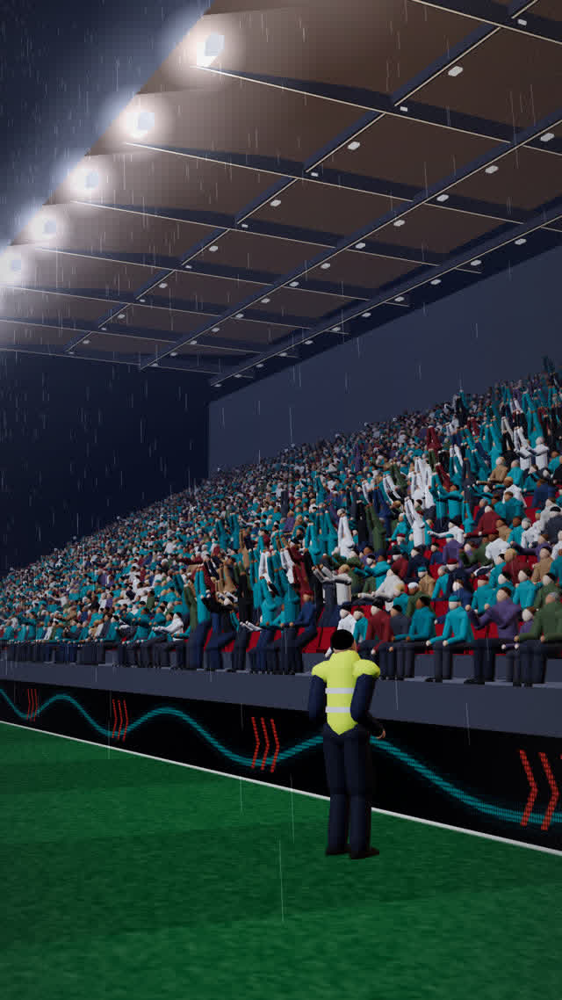

작업 흐름
- 입력
- 주제 하나 (장소 · 시각 · 날씨 · 일어나는 일)
- 브리프
- 한 줄 장면, 도구 선택, 카메라의 한 움직임, 이 장면에서 다섯 기준이 뜻하는 것, 인물의 무게와 대기 동작
- 장면
- 카메라로 투영한 실제 크기의 배치 · 붓질 수만 개 · 사람마다 따로 움직이는 몸 리그
- 감사 루프
- 무작위 다섯 순간의 100% 크롭, 25칸 판정, 찾은 문제와 고친 내용, 한 라운드 모두 통과까지
- 출력
- 시작 타이틀 카드가 있는 HTML 장면 하나 (라이브 재생), 1080×1920 MP4, AUDIT.md
cd ten-second-scene/examples/first-bus
node ../../scripts/audit.mjs scene.html --status # 감사 라운드 현황
node ../../scripts/check.mjs scene.html # 파일 하나 · 코드만 · 결정성 · 사람 · 감사
node ../../scripts/render.mjs scene.html # out/first-bus.mp4
node ../../scripts/new-scene.mjs ../../../my-scene --renderer webgl --title "제목"
node ../../scripts/audit.mjs ../../../my-scene/scene.html # 루프 한 바퀴요구 사항: Node + Playwright Chromium, ffmpeg. 네트워크 · npm 설치 · GPU 없이 돕니다. 단계별 순서는 SKILL.md에 있습니다.
샘플
원본에 없는 주제로 만든 예제 세 편과, 각 예제의 감사 1라운드(실패) 프레임과 통과한 파일의 같은 순간입니다. 카드를 누르면 라이브 데모가 그 순간에서 열리고, 1라운드 카드는 그 예제의 AUDIT.md를 엽니다.
감사 루프 1라운드 → 통과한 파일, 같은 순간
세 예제 모두 1라운드에서 25칸 가운데 15–20칸이 실패했습니다. 「첫차」는 9라운드, 「바람의 들판」은 5라운드, 「파도 응원」은 6라운드 만에 통과했습니다. 왼쪽이 첫 판정을 받은 프레임이고 오른쪽이 통과한 파일의 같은 시각입니다.






「첫차」 Canvas 2D · 1080×1920 · 10초 · 사람 4명
1월 새벽 5시, 눈 오는 언덕길 정류장에 첫차가 들어옵니다. 2.3초 동안 제동하며 앞이 숙었다가 스프링 위에서 흔들리고, 문이 열리며 따뜻한 빛이 눈 위로 떨어집니다. 기다리던 네 사람은 숨을 쉬고(내쉴 때마다 입김), 할머니는 몇 걸음 딛어 돌아서고, 학생은 무게를 뒤로 실었다가 문으로 걸어갑니다. 아파트 창 2,213개, 나뭇가지 6,313개, 눈송이 8,000개가 모두 코드입니다.
「바람의 들판」 WebGL · 붓질 160,490획 · 해바라기 1,502송이 · 10초
늦은 8월 오후, 낮은 해가 왼쪽 구름 가장자리 뒤에 있습니다. 바람 한 줄기가 왼쪽에서 들어와 들판을 건너갑니다. 잎이 연한 뒷면을 뒤집으며 물결이 지나가고, 무거운 꽃 머리는 꽃마다 따로 계산한 스프링으로 잎보다 늦게 숙였다가 지나쳐 돌아옵니다. 구름은 해 쪽이 크림색, 반대쪽이 청회색인 윤곽 붓질입니다.
「파도 응원」 three.js · 26열 · 2,622명 + 안전요원 · 10초
밤 경기에서 긴 관중석을 따라 파도 응원이 카메라 쪽으로 다가옵니다. 사람마다 반응 시간, 열의, 몸무게가 달라서 일찍 서는 사람, 늦게 서는 사람, 반만 일어나는 사람, 일어나지 않는 사람이 있습니다. 일어설 때는 몸을 숙이고 손으로 밀고(예비동작), 팔이 몸보다 늦게 올라가 지나치고, 털썩 앉아 한 번 튕깁니다. 경기장 가장자리의 안전요원은 고개로 파도를 따라가다 몇 걸음 딛어 돌아섭니다.
실제 작품
이 레포에서 만든 스킬입니다. @yunseul_ai가 Threads에 올린 글이 출발점입니다. 영상 AI 없이 클로드 코드로만 만든 10초 영상 세 편(비 그친 골목은 Canvas 2D, 붓질 6만 개가 넘는 별이 빛나는 밤은 WebGL, 2천 명 넘게 따로 움직이는 횡단보도는 three.js)과 그 방법이 담겨 있습니다. 방법은 HTML 파일 하나, 코드로만 그리기, "코드로 만든 데모처럼 보이면 실패", 무작위 다섯 장면을 100%로 보고 다섯 기준표로 고치기를 반복하는 것입니다. 이 스킬은 그 방법만 가져와 도구로 만들었고, 원본의 세 그림은 다시 만들지 않았습니다. 세 예제는 모두 새 주제입니다.
링크
- SKILL.md 워크플로
- 폴더 lib · scripts · templates · examples
- README.md 빠른 시작
- references/SOURCE.md 원본 글의 내용, 가져온 것과 가져오지 않은 것
- references/BRIEF.md 브리프 틀과 라운드 판정 기준표
- references/CRAFT.md 코드 데모처럼 보이지 않게 하는 방법, 렌더러별
- references/BODY.md 사람 리그, 발자국, 대기 동작, 캐스트 시트
- references/LESSONS.md 겪은 문제와 해결